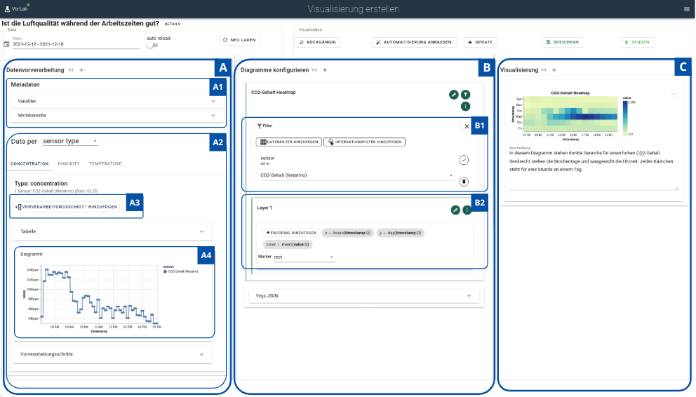

Hello,
I'm Pascal, not the physical unit, not the mathematician from the 16th century, and not the
programming language. But...
Everything started with my passion for physics, my dream to understand everything. After that I
discovered math, the power to describe everything. Finally I fall in love with programming, the
power to do everything.
Scroll down to see more of my work
Work
Lead Software Developer @ FENISKA GmbHBerlin, since 03/2022
THE COMPANYFENISKA is a pet-tech health hardware startup
MY JOURNEYI joined FENISKA as the first full-time Software Engineer. I implemented the firmware for an IoT-Device, Event Processing Pipelines, APIs, and the mobile App. Beeing part of a start-up I got in touch with a broad set of task beyond software engineering.
MY IMPACTBringing a hardware product to life, etablish a complex and efficient event-driven architecture on AWS and shaping a company culture
MY TECH STACKPython, Javascript/Typescript, AWS (Lambda, DynamoDB, S3, SQS, SNS)
THE COMPANYThullex builds solutions for the fashion industry using 3D-scanning
MY JOURNEYI joined Thullex at a very early stage in parallel to my master studies. I had the oprtunity to activly develop a specialized 3D-Scanning System for the producing garment industry.
MY IMPACTInfluencing essential business and software design decisions
MY TECH STACKPython, Linux, Web Development using Vue.js
THE COMPANYThe SAP Innovation Center is part of SAP that works on innovative new projects
MY JOURNEYMy first full-time expierience started in the heart of the Sillicon Valley. I was part of a large team and had the chance not only to contribute but also to take ownership for smaller internal projects.
MY IMPACTPushing internal projects and etablishing test-driven-development for a company internal app
MY TECH STACKPython (Flask), Angular, SAP UI5
A Recommendation System for Visualizing Sensor Data
Project & Master Thesis (submitted in 2022)

Abstract:
IoT platforms manage technical assets and sensors and gather sensor data. Sensor data
enables an in-depth understanding of real-world industrial processes, which can lead
to data-driven decision-making. Visualizations are frequently used for analyzing data.
While domain experts are usually familiar with the context of their assets, they are
less experienced in sensor data visualization. Consequently, domain knowledge and
visualization skills should be combined to create effective visualizations.
This thesis presents a process and tools that support cooperation between domain
and visualization experts to analyze problems using visualizations. Preconfigured
visualizations will be provided in an easily accessible way. Domain experts formulate
problem statements, classify their intent, and select relevant assets and sensors. Upon
that, visualization experts can create visualizations. After the visualization has been
reviewed by domain experts, it can be published to all users of the system. In this thesis
tools and methods for common data preprocessing tasks and visualization configuration
tasks are designed and implemented. For data preprocessing, frequently occurring
preprocessing steps, such as calculating derived values or differences to previous values,
are provided.
A recommendation system supports the configuration of visualizations. The re-
commendation system uses a rule-based approach. Recommendation guidelines by the
visualization community are translated into configurations of visualizations by using
visualization grammar. The rules include pre-existing visualization configurations,
characteristics of the problem statement, and statistical properties of the data. A recom-
mendation algorithm evaluates the rules and generates recommendations so inputs
can be auto-completed when configuring a visualization. It also suggests alternative or
advanced visualizations. The prior work of domain experts and visualization experts
lowers the entrance barrier for users to analyze sensor data through visualizations.
2021: Small contribution to manage the challenges during a pandemic
situation. This tool enables schools to divide their classes in two equal groups. The tool
optimizes the courses to have almost equal sizes.